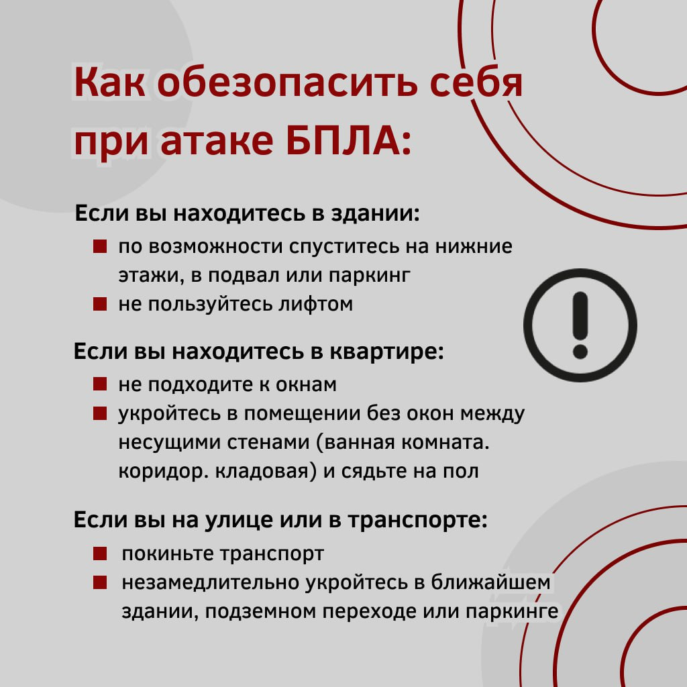

При оповещении об опасности атаки БПЛА необходимо:
1) При нахождении в здании:
по возможности переместиться на нижние этажи, в подвал или подземные парковки;
при нахождении в квартире укрыться в комнатах без окон, между несущими стенами, использовав правило двух стен (прячась как минимум за вторую стену от окна, что может быть коридором, ванной или туалетом);
сесть на пол, не подходить к окнам;
не пользоваться лифтом.

2) При нахождении на улице:
как можно быстрее укрыться в ближайших зданиях, подземных переходах или парковках;
если поблизости нет укрытий, лечь на землю и прикрыть голову руками;
при виде летящего или упавшего БПЛА НЕ ПРИБЛИЖАЙТЕСЬ К НЕМУ, НЕ ИСПОЛЬЗУЙТЕ РЯДОМ МОБИЛЬНЫЕ ТЕЛЕФОНЫ И ДРУГИЕ СРЕДСТВА СВЯЗИ. Безопасное расстояние - не менее 100 метров.
3) При нахождении в транспорте:
как можно быстрее выйти из транспорта и найти укрытие.
4) В случае визуального обнаружения БПЛА, движущегося по траектории, необходимо:
оповестить об угрозе окружающих лиц;
принять меры по укрытию от БПЛА;
убедившись в отсутствии угрозы, при наличии физической возможности, осмотреться и оповестить Единую дежурно-диспетчерскую службу (телефон — 112) и МЧС России (телефон — 101) о возможно находящихся рядом раненых, обрушениях домов, пожарах.
Очевидцев просят не снимать инцидент на телефон и не добавлять геолокацию, так как это может быть использовано противником. Разрешается снимать только небо и сам аппарат, избегая привязки к местности. Публикация фото- и видеосъемки запускаемых установок может раскрыть их местоположение, что ставит под угрозу российскую противовоздушную оборону.